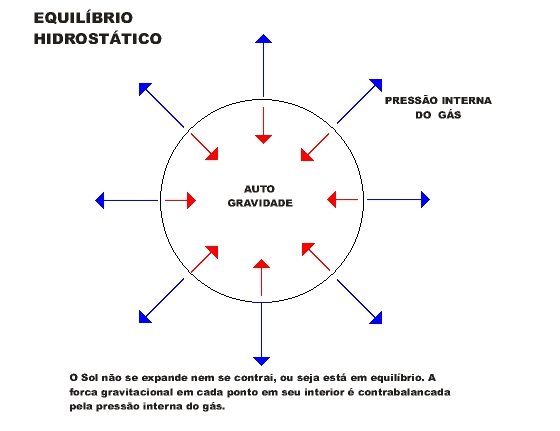

Como acontece uma supernova?
Para responder essa questão, precisamos primeiro entender como funciona uma estrela.
Em resumo, uma estrela funciona a base do que chamamos de fusão nuclear, ou seja, em seu núcleo, em todo momento,
átomos mais leves estão sendo fundidos em átomos mais pesados e estáveis, como o ferro. Essa fusão gera uma espécie
de força repulsiva, que se alastra para fora da estrela. Agora, enquanto temos a pressão que a fusão nuclear exerce
para fora da estrela, também temos a pressão da gravidade, que é muito maior em estrelas por conta de sua massa. Assim,
há um equiíbrio, chamado Equilíbrio Hidrostático que é basicamente a estabilidade da luta entre a repulsão
da fusão nuclear contra o auto da gravidade.

É exatamente quando o combustível (as partículas em seu núcleo) não se torna autosustentável, ou seja, não liberam
mais energia, como também consomem, que a gravidade vence essa luta. A estrela entra em um colapso violento. As camadas
mais externas caem sobre o núcleo de ferro massivo, causando essa explosão capaz de ofuscar uma galáxia inteira. Nunca
nenhuma supernova foi filmada, pois é um trabalho muito difícil, levando em conta que esse fenomeno é raro e imprevisível.
Porém, há simulações de como esse evento aconteceria.